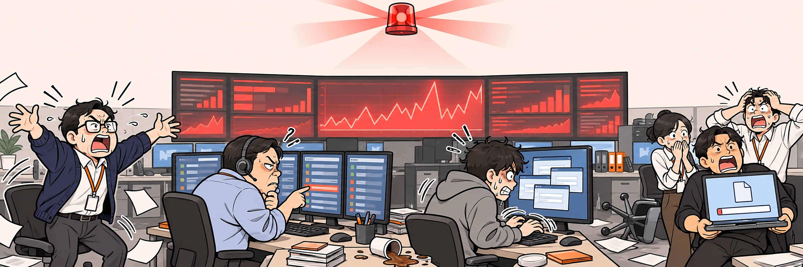

장애는 한 건인데,
원인 찾기는 매번 이 난리입니다.
이음 E:UM
실행 번호 하나로, 운영 도구도 하나로.
방탄소녀단
알림에서 원인 함수까지
부하를 다시 만들어 볼 필요 없이, 클릭 한 번으로!
프로세스가 죽은 이유?
소스 레벨까지 분석한 사망 진단서 한 장으로!
문장 한 줄이면 배치 작업도, 관제 보드도
입맛대로 초안이 뚝딱!
실행 번호 하나로
운영과 장애 분석을 한 번에 잡았습니다.
판단은 직접 해 보세요.
이음 E:UM · 방탄소녀단
화면의 서버와 수치는 모의 데이터이고, AI 문장은 준비된 예시입니다.